Core Planning I – Data and Calculations
Core Planning I – Data and Calculations
The Very Heart of OneStream Planning
The foundation of Planning in OneStream is the Cube. The power of Cube Planning is in its calculations. Writing effective code requires a deep understanding of the OneStream data architecture and Finance Business Rule Engine. Code must be written in a clear, concise, comprehensible, and reusable manner.
This Core I chapter covers these fundamental concepts through concrete examples that provide solutions to common Planning needs and the reasons behind the solutions to those use cases. As always, your authors attempt to explain the why in addition to the how. If you, Gentle Reader, understand the reasons behind OneStream’s functionality, you will be able to expand upon this chapter’s scope in your real-world applications.
The primary topics of Data and Calculations are intertwined in this chapter, as both necessarily depend on each other.
Data covers how OneStream really stores data and the impact on application performance, how to remove unnecessary data from both the data fact tables and within Finance Business Rules, and lastly, the surprising behavior of the Level 2 Data Unit.
Calculations describes the scope of data buffers, reviews different approaches to calculating data within data buffers, reveals how to smash through the calculation limitations of the Level 1 Data Unit, defines the importance of code style and commenting, and lastly, reviews how to significantly reduce coding effort and enhance reusability.
Any one of the sections can be read separately; all are important and deserve your attention.
Core Planning I – Data and Calculations
The Riddle of the Data
How OneStream stores data is key to understanding how Finance Business Rules work, what makes them slow or fast, and how we must write them in a performant manner. The foundation of efficient code – the very foundation of OneStream itself – is its storage architecture. A OneStream SQL Server database without MarketPlace solutions or custom tables has (as of version 6.5) over 400 tables and 12 views. To the User, and even the developer, these database objects are, for the most part, irrelevant as they are abstracted by the OneStream Engine and User Interface.
Regardless, they exist, and close examination of their storage schemas informs good code practice.
Core Planning I – Data and Calculations › The Riddle of the Data
How Does OneStream Store Numeric Data?
Numeric Cube data is stored by year in 105 fully normalized fact tables from DataRecord1996 to DataRecord2100. Each record contains the metadata and data for all stored data, including upper-level Entity Dimension Members. Dynamic Dimensions such as User-Defined, Account, and Flow are not stored above the Base level.
Core Planning I – Data and Calculations › The Riddle of the Data › How Does OneStream Store Numeric Data?
Just One Number
Core Planning I – Data and Calculations › The Riddle of the Data › How Does OneStream Store Numeric Data? › Just One Number
Real
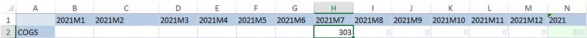
Figure 2.1
This Quick View has just one number within an otherwise completely empty Plan Scenario. Note that the cells before 2021M7 are blank and the ones after show grayed out 0s. By right-clicking on cell H2, and selecting the OneStream pop-up Cell Status, we can see that the Cell Status has a Cell Amount of 303.00, Is Real Data, is not Derived Data, and its Storage Type is Input (Forms).
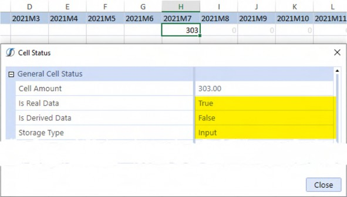
Figure 2.2
This seems reasonable: there is a number there (your author typed it in himself) which makes it as real as a number in OneStream can be.
Core Planning I – Data and Calculations › The Riddle of the Data › How Does OneStream Store Numeric Data? › Just One Number
NoData
The same exercise in cell G2, shows that the Amount NoData cell is not Real Data, is not Derived Data, and its Storage Type is NotStored. As with the 303 data value in cell H2, this seems reasonable because no data has been entered in 2021M6.
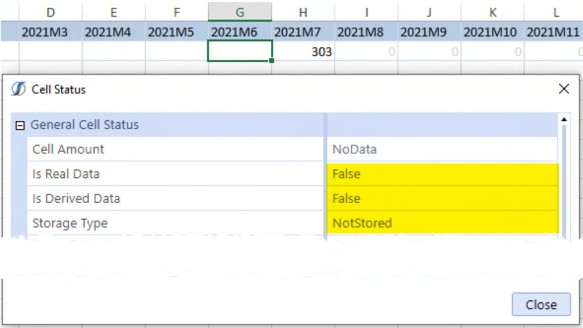
Figure 2.3
Core Planning I – Data and Calculations › The Riddle of the Data › How Does OneStream Store Numeric Data? › Just One Number
Derived
NoData and Real are self-explanatory; the data is not stored at all, or it is stored. Derived is not quite as straightforward because it is data that is and is not there.
Core Planning I – Data and Calculations › The Riddle of the Data › How Does OneStream Store Numeric Data? › Just One Number › Derived
Is it?
The zeros in cells I2 through M2 indicate that something is there, but what? If the View Dimension POV Member is changed from Periodic to YTD, the suggestion that data values are stored for Derived Data is clearer.
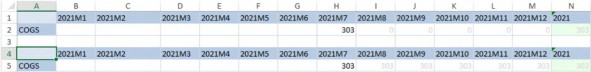
Figure 2.4
Cells I5 through M5 now show a grayed-out 303. Again, this seems logical; a real value of 303 exists in 2021M7, so YTD 2021M8 through 2021M12 should also show the same if they contain no additional data.
Checking cell I5’s Cell Status shows that 2021M8 is not Real Data, Is Derived Data, and its
Storage Type is NotStored; the same is true for M5.
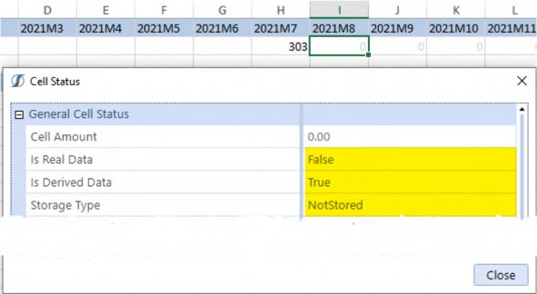
Figure 2.5
Core Planning I – Data and Calculations › The Riddle of the Data › How Does OneStream Store Numeric Data? › Just One Number › Derived
It is
Examining the application’s raw fact table DataRecord2021 shows that a 0 is stored in the M6Value field and prior months, 303 is stored in the M7Value field, and 303 is stored in M8Value and beyond. All of the months are valued with either 0 (NoData) or 303 for both (Real Data) and (Derived Data). A single data value has triggered the storage of 11 additional fields.
Note the M6Status, M7Status, and M8Status field values: 16, 33, and 18; they mirror the Cell Status shown above and can be used to quickly look at the status of all period data.
Figure 2.6
Core Planning I – Data and Calculations › The Riddle of the Data › How Does OneStream Store Numeric Data?
From Normalized to Denormalized
OneStream’s normalized fact tables are difficult to read. A simple query that joins to the Member data table makes the data tables easier to understand.
Core Planning I – Data and Calculations › The Riddle of the Data › How Does OneStream Store Numeric Data? › From Normalized to Denormalized
Denormalized DataRecords2021
-- Not all MnStatus fields are resolved SELECT
C.Name AS Cube
, M.Name AS Entity
--, D.ConsId
, CASE
WHEN D.ConsId = 176 THEN 'USD'
WHEN D.ConsId = -18 THEN 'Cons/Agg' ELSE CAST(D.Consid AS CHAR)
END AS Consolidation
, M1.Name AS Scenario
, D.YearId AS Year
, M2.Name AS Account
--, D.OriginId
, CASE
WHEN D.OriginId = -30 THEN 'Forms' WHEN D.OriginId = -999 THEN 'Import' ELSE CAST(D.OriginId AS CHAR)
END AS Origin
--, D.ICId
, CASE
WHEN D.ICid = -999 THEN 'None' ELSE CAST(D.ICId AS CHAR)
END AS Intercompany
, M3.Name AS Flow
, M4.Name AS UD1
, M1Status
, M1Value
, M2Status
, M2Value
, M3Status
, M3Value
, M4Status
, M4Value
, M5Status
, M5Value
--, M6Status
, CASE
WHEN D.M6Status = 16 THEN 'No Data' WHEN D.M6Status = 17 THEN 'Aggregated' WHEN D.M6Status = 18 THEN 'Derived' WHEN D.M6Status = 33 THEN 'Real'
WHEN D.M6Status = 97 THEN 'Consolidated' WHEN D.M6Status = 145 THEN 'Calculated' ELSE CAST(D.M6Status AS CHAR)
END AS M6Status
, M6Value
--, M7Status
, CASE
WHEN D.M7Status = 16 THEN 'No Data' WHEN D.M7Status = 17 THEN 'Aggregated' WHEN D.M7Status = 18 THEN 'Derived' WHEN D.M7Status = 33 THEN 'Real'
WHEN D.M7Status = 97 THEN 'Consolidated' WHEN D.M7Status = 145 THEN 'Calculated' ELSE CAST(D.M7Status AS CHAR)
END AS M7Status
, M7Value
--, M8Status
, CASE
WHEN D.M8Status = 16 THEN 'No Data' WHEN D.M8Status = 17 THEN 'Aggregated' WHEN D.M8Status = 18 THEN 'Derived' WHEN D.M8Status = 33 THEN 'Real'
WHEN D.M8Status = 97 THEN 'Consolidated' WHEN D.M8Status = 145 THEN 'Calculated' ELSE CAST(D.M8Status AS CHAR)
END AS M8Status
, M8Value
, M9Status
, M9Value
, M10Status
, M10Value
, M11Status
, M11Value
, M12Status
, M12Value
FROM DataRecord2021 D INNER JOIN Cube C
ON D.CubeId = C.CubeId INNER JOIN Member M
ON D.EntityId = M.MemberId INNER JOIN Member M1
ON D.ScenarioId = M1.MemberId INNER JOIN Member M2
ON D.AccountId = M2.MemberId INNER JOIN Member M3
ON D.FlowId = M3.MemberId INNER JOIN Member M4
ON D.UD1Id = M4.MemberId
ORDER BY Entity, UD1, Account, Consolidation, Origin, FlowNote: Some fields, e.g., ConsId, OriginId, ICid, and MnStatus, are not found in the Member table and are empirically derived instead. Given the small data sample and limited data forms, there are undoubtedly other values, hence the CASE ELSE condition for those fields. |
Core Planning I – Data and Calculations › The Riddle of the Data › How Does OneStream Store Numeric Data? › From Normalized to Denormalized
DataRecord2021 in Human Format
Figure 2.7
Beyond the Member names (Member contains descriptions as well), the record and the by-month data status are now clear, and the way that OneStream stores data is clear as well; if a single month of data exists, the prior NoData months are in fact stored with 0 values, and the future Derived months are stored with repeated YTD data values. One data value is actually twelve.
In the case of this example, the OneStream Quick View suppresses the display of those NoData months and, when the View Dimension is Periodic, backs out the stored YTD values for future months.
Beyond academic interest, why does any of this matter? The answer: data buffer calculation efficiency.
Core Planning I – Data and Calculations › The Riddle of the Data
Doing the Mostest with the Leastest
If NoData and Derived Data exist, and if a data buffer is a selection of data that exists, and if that selection logically should not exist in those months, it follows that any code that addresses them is redundant at best and always exacts a concomitant performance cost. Simply put, data buffers that address NoData and Derived data are – within Planning applications and their Periodic data orientation – almost always irrelevant. Performant calculations avoid irrelevant data because they address less data.
Correct calculations avoid irrelevant data, particularly within the scope of a data buffer, because a data buffer defines where a calculation occurs. Consider a rate calculation that fires before and after July 2021. Should it fire if – functionally – there is no data in those periods? Calculations that fire in unexpected places negatively impact data quality, sometimes significantly, and are difficult to identify because they are errors that spring from data that should not exist.
Core Planning I – Data and Calculations › The Riddle of the Data › Doing the Mostest with the Leastest
RemoveNoData and RemoveZeros
The RemoveNoData and RemoveZeros formula functions are simple additions to data buffer definitions that remove NoData and Derived data from data buffers. Use them.
Assuming a Data Management step that processes a single Entity and all 12 months of 2021, the impact of the two functions becomes apparent.
Note: memberscript, of the static Dimensions, e.g., V#Periodic, U2#None, etc. |
Core Planning I – Data and Calculations › The Riddle of the Data › Doing the Mostest with the Leastest › RemoveNoData and RemoveZeros
Without Either
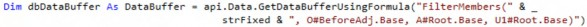
A simple formula-based data buffer that does not exclude NoData and Derived fires 12 times.
Core Planning I – Data and Calculations › The Riddle of the Data › Doing the Mostest with the Leastest › RemoveNoData and RemoveZeros
RemoveNoData
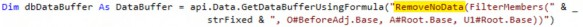
Adding RemoveNoData to the filter definition fires six times because derived data actually exists in the record.
Core Planning I – Data and Calculations › The Riddle of the Data › Doing the Mostest with the Leastest › RemoveNoData and RemoveZeros
RemoveZeros
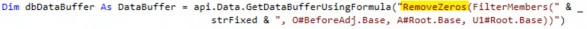
RemoveZeros fires once as there is only one cell with Real data.
Core Planning I – Data and Calculations › The Riddle of the Data › Doing the Mostest with the Leastest
Less is More
Irrespective of code elegance, Cube design, or server speed, processing less data will always be faster. Fast calculations result in a better User Experience and a quicker path to results. Use these functions – particularly RemoveZeros because of the irrelevancy of YTD data in a Planning application – to remove extraneous (and potentially incorrect) data and fast.
Core Planning I – Data and Calculations › The Riddle of the Data
Really Removing Zeros
Removing irrelevant values from a data buffer is important for calculation speed. Removing rows of irrelevant data makes Calculations, Aggregations/Consolidations, and Reporting faster. A single data value will force the creation of an additional six NoData cells and five Derived cells. If that single data value is a zero and if zero data values are generally not needed in Planning applications (they almost never are), getting rid of that data record is warranted with the happy result of smaller and faster datasets. Faster is always better.
Core Planning I – Data and Calculations › The Riddle of the Data › Really Removing Zeros
The Zero Use Case
For a given 12 months of data, there must be one real zero stored in any of the months.
Figure 2.8
This condition will trigger prior NoData and subsequent Derived data values. As all of the data values in the fact fields are zero, the record is not needed and should be removed.
When that Data Unit is aggregated in AVBS, that single zero value becomes 36: 12 zeros in South_Carolina, 12 at the Parent East, and a further 12 at Total_Geography. None of the zeros are meaningful, and yet they occupy space in the fact table.
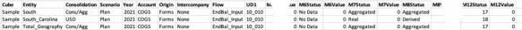
Figure 2.9
Core Planning I – Data and Calculations › The Riddle of the Data › Really Removing Zeros
Removing Zeros
Removing those zero rows requires looping through all data within a Data Unit, interrogating every number’s value, and if zero assigning it to NoData. Remember, because of the way NoData and
Derived data are stored, only Real data will be removed – these will be those fact rows that are zero-only. Regardless of the scope of data, removing all-zero rows, wherever possible, is good practice because of their potential performance impact.
Note: The technique of using the RemoveZeros function should not be used in this use case because – after all – the goal is to find zeros and then remove them. |
Core Planning I – Data and Calculations › The Riddle of the Data › Really Removing Zeros
RemoveZeros
This Finance Business Rule has six parts:
Static and POV Member assignments.
Declaring a destination tuple – a fully qualified Member intersection for all Dimensions – to receive the cleared zeros.
Defining a source data buffer as defined by
GetDataBufferUsingFormulaand a target
DataBuffer.
Looping the cells in that data buffer.
Testing if the cell amount is zero and, if so, setting the target cells to
IsNoData = True.Committing the target data buffer and destination expression.
Core Planning I – Data and Calculations › The Riddle of the Data › Really Removing Zeros › RemoveZeros
Fixed Members
Dimensions that are not used, or whose Member names are fixed, are assigned to a string variable, in this case, strFixed.
Dim strFixed As String = "V#Periodic:F#EndBal_Input:I#None:U2#None:U3#None:U4#None:U5#None:U6#N one:U7#None:U8#None"
Core Planning I – Data and Calculations › The Riddle of the Data › Really Removing Zeros › RemoveZeros
Destination
The Expression Destination is instantiated as blank and will be assigned in the source data buffer definition.
Dim diDestination As ExpressionDestinationInfo = api.Data.GetExpressionDestinationInfo("")
Core Planning I – Data and Calculations › The Riddle of the Data › Really Removing Zeros › RemoveZeros
Data Buffer
Instantiate and assign a data buffer using GetDataBufferUsingFormula. Note that the RemoveZeros function is not used as the very point of this code is to remove zeros. The Expression Destination is assigned in this statement.
Dim dbSourceBufferToClear As DataBuffer = api.Data.GetDataBufferUsingFormula("FilterMembers(" & strFixed & ", A#Root.Base, U1#Root.Base, O#Top.Base)", DataApiScriptMethodType.Calculate, False, diDestination)
Dim dbResultBufferToClear As New DataBuffer()Core Planning I – Data and Calculations › The Riddle of the Data › Really Removing Zeros › RemoveZeros
Looping
Loop the cells in the data buffer that have values. All values, zero or otherwise, are in scope.
For Each cellSource As DataBufferCell In dbSourceBufferToClear.DataBufferCells.Values.
.
.
NextCore Planning I – Data and Calculations › The Riddle of the Data › Really Removing Zeros › RemoveZeros
Test and Set to Null
There will be many more non-zero rows than zero rows; only the zeros should be cleared. The assignment of zero to the cellSource.CellAmount is arbitrary – there must be some value. It is the CreateDataCellStatus’ isNoData property set to True that removes the zeros. This behavior is similar to api.Data.SetDataCell.
Assigning the isNoData or null cell amount to the target data buffer creates a zero-only data buffer. This target will be far smaller than the source data buffer because the incidence of zero-only rows, while important, will be smaller than the other data values and hence rows.
Dim cellResult As New DataBufferCell(cellSource)
If cellSource.CellAmount = 0 Then cellResult.CellAmount = 0
Dim objCellStatus As DataCellStatus = DataCellStatus.CreateDataCellStatus(True, False)
objCellStatus.IsCalcStatus = True cellResult.CellStatus = objCellStatus dbResultBufferToClear.SetCell(si, cellResult)
End IfCore Planning I – Data and Calculations › The Riddle of the Data › Really Removing Zeros › RemoveZeros
Commit Null
The last step is an api.Data.SetDataBuffer that writes the zero-only data buffer to disk.
api.Data.SetDataBuffer(dbResultBufferToClear, diDestination)
Core Planning I – Data and Calculations › The Riddle of the Data › Really Removing Zeros
Where’s the Zeros?
This data clear occurs at the Base South Carolina Entity. If aggregated, ancestor data at South and Total_Geography remain after the level zero clear.
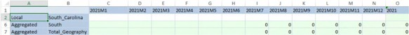
Figure 2.10
This can be seen from the DataRecords2021 table as well.
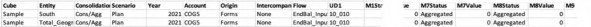
Figure 2.11
A Consolidation (C#Aggregated or C#Local) will clear out the upper-level Members and remove them from the fact tables.
Core Planning I – Data and Calculations › The Riddle of the Data › Really Removing Zeros
How Important is this?
All-zero data rows are – in almost every instance – superfluous to requirements. Less data means a faster application. Schedule a daily administrative Data Management Sequence to run a remove zero Finance Business Rule with a Force Consolidate to remove unneeded data.
Core Planning I – Data and Calculations › The Riddle of the Data
Removing Data
The Data Management Reset and Clear Data Steps will remove data. They are typically significantly slower than a Finance Business Rule approach. The above Buffer Calculations code to remove zeros can be easily adapted by commenting out the If cellSource.CellAmount =
0/End If test for zero. All values in the data buffer will then be cleared; the scope of the data buffer will control the cleared data.
| Note: A Finance Business Rule does not clear Stage data as a Scenario Reset will. This is typically not an issue but is worth remembering if that level of data clearing is required. |
Core Planning I – Data and Calculations › The Riddle of the Data › Removing Data
Code
cellResult.CellAmount = 0
''' Must be set to isNoData = True if removing data. Dim objCellStatus As DataCellStatus =
DataCellStatus.CreateDataCellStatus(True, False) objCellStatus.IsCalcStatus = True cellResult.CellStatus = objCellStatus dbResultBufferToClear.SetCell(si, cellResult)Core Planning I – Data and Calculations › The Riddle of the Data
The Calculated Data Vanishes
Core Planning I – Data and Calculations › The Riddle of the Data › The Calculated Data Vanishes
Short and Sweet
Do not calculate data in O#Import if you plan to load data within the same Level 2 or Level 3 Data Unit.
Core Planning I – Data and Calculations › The Riddle of the Data › The Calculated Data Vanishes
Why Not? Everyone Does it. They (and you) Shouldn’t. Ever.
At first blush, O#Import is a logical place to write calculations: it is read-only to Planners so it can be retained for analysis and yet be adjusted in O#Forms either directly or through O#BeforeAdj. Other Performance Management products do not have this luxury of both retention of calculated results and virtual adjustment. Why not calculate in O#Import, as practically everyone does?
Calculated data should never reside in O#Import because it may disappear without notice, which engenders a state of data quality sure to foster confusion, sow dismay, and deliver pain because calculated data must persist unless it is explicitly cleared or recalculated.
The cause of the deletion is OneStream’s data architecture itself.
Core Planning I – Data and Calculations › The Riddle of the Data › The Calculated Data Vanishes
The Level 2 Data Unit
Data Unit levels define how OneStream manages data. There are three levels to the Data Unit.
Level 1: Cube, Entity, Scenario, Time, Consolidation, and Parent
Level 2, also known as the Workflow Data Unit: as Level 1 plus Account
Level 3: as Level 2 plus Channel (a single User-Defined Dimension)
Core Planning I – Data and Calculations › The Riddle of the Data › The Calculated Data Vanishes › The Level 2 Data Unit
Level 1 Data Unit
When developing and executing calculations, the Level 1 Data Unit sufficiently describes how data works: a Data Unit is comprised of four (technically five, but Parent is ignored for Planning-style calculations) Dimensions, Calculations must take place within the Data Unit (there is an important exception to this rule, see Breaking the Data Unit with MemberScriptAndValue elsewhere in this chapter), and Data Management Custom Calculate Steps control the scope of the Data Unit through its POV selections.
Core Planning I – Data and Calculations › The Riddle of the Data › The Calculated Data Vanishes › The Level 2 Data Unit
Workflow Level 2 Data Unit
However, this calculation-centric perspective ignores the role of the Planner’s Workflow, which operates under the Level 2 Data Unit. When multiple Workflow Profiles are used to load to a single Entity, the same Account, and different User-Defined Dimension Members (see the Principles chapter for background on this approach), the Level 2 Data Unit’s segregation based on Cube, Entity (again, ignoring Parent for the purposes of loading data), Scenario, Time, Consolidation, and
Account but not UDn will cause OneStream to reload data from Stage for the other data in the same Level 2 Data Unit. This happens automatically and cannot be turned off.
Data that is input or calculated at O#Forms is not impacted. However, when data is calculated at O#Import, that automatically triggered reload process will delete any calculated results in that Level 2 Data Unit and replace them with the previously loaded data.
Within the context of Planning applications, this is not as esoteric as it seems: financial Consolidations’ strictures and data loading patterns often do not apply. Planning applications that often ignore Entity are not uncommon and focus instead on User-Defined Dimensions to manage the data load process.
Given the risk to data quality that this behavior presents, it is best to never calculate in O#Import.
Core Planning I – Data and Calculations › The Riddle of the Data › The Calculated Data Vanishes
A Use Case
What data pattern causes the deletion of calculated data in O#Import?
Core Planning I – Data and Calculations › The Riddle of the Data › The Calculated Data Vanishes › A Use Case
Level 2 Initial Load
The first data load of 1066 occurs at the E#Pennsylvania:T#2021M2:S#Plan:A#Distribution Level 2 Data Unit. U1#10_010 is within the Level 2 Data Unit.
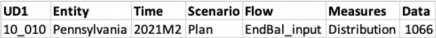
Figure 2.12
The result is as expected:
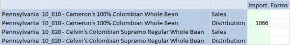
Figure 2.13
Core Planning I – Data and Calculations › The Riddle of the Data › The Calculated Data Vanishes › A Use Case
Code
After a data load occurs (this could be a seeding from Actual or a preliminary Plan data load), business conditions may require a calculation to revalue an existing data intersection. This calculation, on top of the data already loaded in the Level 2 Data Unit, is the tripwire for the data quality behavior.
For the purposes of this example, the calculation is simple and explicit: calculate data at E#Pennsylvania:S#Plan:T#2021M2:A#Distribution:U1#10_010:O#Import (and E#Pennsylvania:S#Plan:T#2021M2: A#Distribution:U1#10_010:O#Forms) to illustrate how this data location is not impacted by the Level 2 Data Unit. Note the full tuple description excludes C#Local as it cannot be part of calculations and is implicitly assigned, as is Cb#Sample.
Dim strFixed As String = "V#Periodic:F#EndBal_Input:I#None:U2#None:U3#None:U4#None:U5#None:U6#N one:U7#None:U8#None"
api.Data.Calculate("A#Distribution:E#Pennsylvania:S#Plan:T#2021M2:U1#1 0_010:O#Import:" & strFixed & " = 42", True)
api.Data.Calculate("A#Distribution:E#Pennsylvania:S#Plan:T#2021M2:U1#1 0_010:O#Forms:" & strFixed & " = 42", True)Again, an expected result. Note that 42 is now in both O#Import and O#Forms:
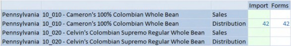
Figure 2.14
Core Planning I – Data and Calculations › The Riddle of the Data › The Calculated Data Vanishes › A Use Case
Different Account, Same UD1
If data is then loaded to E#Pennsylvania:S#Plan:T#2021M1:C#Local: A#Sales:U1#10_010, the calculated E#Pennsylvania:A#Distribution data is not impacted because Account Sales acts as a unique identifier – the Level 2 Data Unit – within the Level 1 Data Unit.
From this data file:
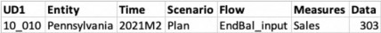
Figure 2.15
E#Pennsylvania:A#Sales is loaded, E#Pennsylvania:A#Distribution is retained:
Figure 2.16
Core Planning I – Data and Calculations › The Riddle of the Data › The Calculated Data Vanishes › A Use Case
Same Account, Different UD1
However, if data is loaded to A#Distribution:E#Pennsylvania:S#PlanT#2021M1: U1#10_020:O#Import, the calculated A#Distribution:E#Pennsylvania:S#Plan:T#2021M1:C#Local:U1#10_010:O#Import is erased because User-Defined Dimensions are not part of the Level 2 Data Unit and thus do not segregate the two data files from one another – both are now the same Level 2 Data Unit, thus setting off the data quality mine. KABOOM!
From this data file:
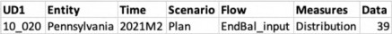
Figure 2.17
E#Pennsylvania:A#Distribution:U1#10_020 is loaded, E#Pennsylvania:A#Distribution:O#Import’s value of 42 is replaced with its initial value of 1066, and E#Pennsylvania:A#Distribition:O#Forms is unchanged.
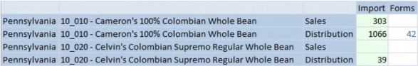
Figure 2.18
Core Planning I – Data and Calculations › The Riddle of the Data › The Calculated Data Vanishes
What Happened?
The Task Activity log shows the last data load. Note the Task Type: Load Cube Batch. The normal Task Type for an Import data load is Load Cube.
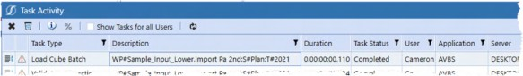
Figure 2.19
Core Planning I – Data and Calculations › The Riddle of the Data › The Calculated Data Vanishes › What Happened?
Unpossible!
Drilling into the task reveals OneStream’s true behavior:
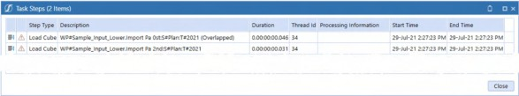
Figure 2.20
Both data files were loaded. The entire Level 2 Data Unit is loaded from Stage every time any data is loaded into that Data Unit. The calculated value of 42 in O#Import is not in Stage and hence cannot be reloaded.
If you plan to load data within the same Level 2 or Level 3 Data Unit, do not calculate data in
O#Import.
Core Planning I – Data and Calculations › The Riddle of the Data › The Calculated Data Vanishes
What About Level 3?
The Level 3 Data Unit, more commonly referred to as Workflow Channels, can further isolate the Data Unit to a single User-Defined Dimension, thus solving the above data clear and reload use case. However, it applies to just one User-Defined Dimension and does not resolve this issue when more than one User-Defined Dimension is in play; the replacement of data calculated in O#Import remains. Calculate data in O#Forms.
Core Planning I – Data and Calculations
Learn to Code
Core Planning I – Data and Calculations › Learn to Code
Data Buffers
Core Planning I – Data and Calculations › Learn to Code › Data Buffers
Just What Exactly is a Data Buffer?
A data buffer is nothing more than a slice of data within a Data Unit. For those practitioners familiar with multidimensional databases in general, a data buffer is a block of data.
That subset of data can be every single bit of data in a Data Unit (which is a data buffer itself) or a single number. Calculations occur at the dimensional intersections a data buffer defines.
Core Planning I – Data and Calculations › Learn to Code › Data Buffers › Just What Exactly is a Data Buffer?
Definitions
A data value’s fully-defined cross-dimensional intersection is – in common practice – called a tuple. In OneStream, tuples and sets are defined by Member Scripts.
Data buffers are comprised of the individual existing data points within the buffer; these data points are cells.
Cells can be traversed by loops within data buffers.
The cells are addressable via what is commonly termed a Name Value Pair; within OneStream, these are typically referred to as Key Value Pair. The Primary Key of that Key Value Pair can be used to identify the cell’s location within the data buffer’s collection of cells.
Cells contain data in the form of a numeric value as well as metadata such as the Dimension Members that define the data value’s Member Script.
Core Planning I – Data and Calculations › Learn to Code › Data Buffers
A Very Simple Data Buffer
The Distribution expense calculation requirement is direct: Distribution = Sales * 0.042.
Core Planning I – Data and Calculations › Learn to Code › Data Buffers › A Very Simple Data Buffer
Finance Business Rule
How is that calculated in OneStream? By creating a Finance Business Rule and running it via a Data Management Custom Calculate Step.
The Business Rule is as straightforward as its requirement.
First, a clear to ensure that whatever data value existed before is now removed (this should be overwritten by the calculation itself, so is largely a just-in-case measure). Although A#Distribution:O#Forms is not a complete tuple, it is a data buffer because the undefined Dimensions such as UD1, Flow, etc., are implicit.
api.data.ClearCalculatedData("A#Distribution:O#Forms", True, True, True, True)
The second step is the actual calculation which uses overloaded properties to explicitly assign Members or Member Functions to Dimensions, i.e., F#EndBal_Input and U1#Total_Products.Base.
api.Data.Calculate("A#Distribution:O#Forms = A#Sales:O#BeforeAdj * 0.042)",,"F#EndBal_Input",,"I#None","U1#Total_Products.Base",,,,,,,,,T rue)
There are two explicitly defined data buffers in this calculation: the Distribution target and the Sales source with its factor rate of 0.042. There are filter definitions that define the data buffer scope: Flow’s EndBal_Input, Intercompany’s None, and all Base level Products.
To calculate Distribution in South Carolina, the Data Management Step must specify the Data Unit’s Cube, Entity, Consolidation, Scenario, Time, and Business Rule, which – in this example – is Sample, South_Carolina, Local, Plan, and 2021M8. Accounts, Flow, Intercompany, UDns, and all other dynamic Dimensions are encompassed by the Data Unit itself and are thus not required parameters. These parameters can be queried within a Finance Business Rule, although this functionality is not germane to the following examples.
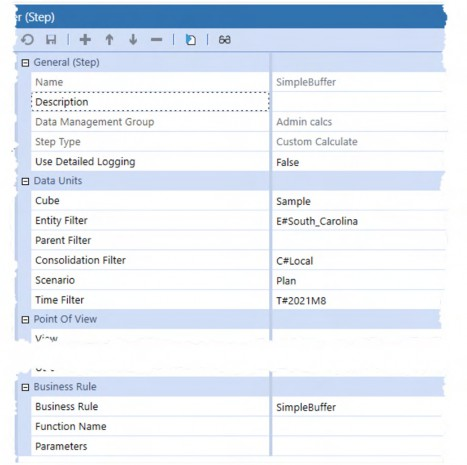
Figure 2.21
When executed, the Sales of 220 and 204 in products 10_010 and 10_020 respectively are multiplied by the constant 0.042.
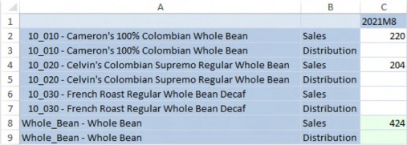
Figure 2.22
Which produces the following result:
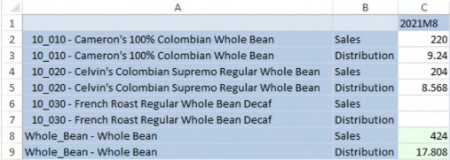
Figure 2.23
But what happens when the contents of a data buffer need to be interrogated? A simple api.Data.Calculate does not allow the testing of data or metadata properties of cells within a data buffer.
Testing must take place at an individual cell level. Short of explicitly defining every tuple within a data buffer, a loop of all the existing data cells in the data buffer must be performed to allow the evaluation and calculation of data within and without that data buffer.
| Note: A data buffer is a Method of addressing existing cells but does not exclude reaching outside the data buffer. Once the data buffer cells are in play, other Member intersections can be read from and written to. The data buffer examples, below, show creating a Sales-only data buffer, reading from a Distribution Rate outside the data buffer, and writing to an Account – Distribution – that is outside the data buffer. |
Core Planning I – Data and Calculations › Learn to Code › Data Buffers
Defining the Data Buffer
See the Rules and Calculations chapter in OneStream Press’ OneStream Foundation Handbook and OneStream Software’s Design and Reference Guide for an overview of the multiple data buffer definition Methods. This book will use the api.Data.GetDataBufferUsingFormula Method as it uses familiar and easily understood dimensional functions.
Core Planning I – Data and Calculations › Learn to Code › Data Buffers › Defining the Data Buffer
Three Approaches
There are three general approaches to working with data buffers beyond a simple api.Data.Calculate: Calculate Within, Calculate With Eval, and Buffer Calculations.
All three approaches create data buffers, loop their data, and perform calculations within that loop. They differ, significantly so, in how those operations are performed.
Their order is one of performance or at least a theoretical one. Efficiency or lack thereof will be most observable when range restricted Custom Calculate Data Management Steps are not used, i.e., Finance Business Rules attached to a Cube or Data Management Custom Calculate Steps that apply to a wide Data Unit scope, not Finance Business Rules attached to a Form that execute for one Data Unit. If code is not efficient but its data scope is small, the perceived performance penalty is unlikely to be noticed.
A note about performance for these data buffer techniques and indeed any other Component of a OneStream application: it is difficult, almost impossible except in the most obvious of contexts, to definitively state that a given approach is faster or slower than another without benchmarking on a realistic set of data. Theory is one thing, how a process performs when fully implemented is another. Test your solutions because common practice can be wrong.
Regardless of theoretical performance considerations, all three Methods work. As always with real world applications, test, test, test to ensure that the calculation is executing within its required performance specifications and not incidentally deliver the correct results.
Core Planning I – Data and Calculations › Learn to Code › Data Buffers › Defining the Data Buffer › Three Approaches
Calculate Within
The Calculate Within technique uses api.Data.Calculate and api.Data.SetDataCell Methods to calculate data on a cell-by-cell basis. It is metadata-centric because it needs the Member tuple as target.
Core Planning I – Data and Calculations › Learn to Code › Data Buffers › Defining the Data Buffer › Three Approaches
Calculate With Eval
Calculate With Eval also uses api.Data.Calculate but instead of executing the Method within a surrounding data buffer loop, it uses that Method’s AddressOf property to call a private subroutine that performs the loop, testing, and valuation of A#Distribution within a single data buffer read and write.
Core Planning I – Data and Calculations › Learn to Code › Data Buffers › Defining the Data Buffer › Three Approaches
Buffer Calculations
The Buffer Calculations process addresses the cells within the source data buffer, directly performs calculations on those cells’ data and properties, and writes the results back to the database through a target data buffer in an all-at-once operation.
Core Planning I – Data and Calculations › Learn to Code › Data Buffers › Defining the Data Buffer › Three Approaches
Performance Implications
Theoretically, the Calculate Within approach should be the slowest of the three because, although it loops a focused data buffer, the api.Data.Calculate within the loop brings the Data Unit’s entire data buffer into memory for each pass when writing to the target tuple, thus causing many unnecessary memory operations.
Calculate With Eval should be faster than Calculate Within logic because it brings the Data Unit’s data buffer into memory once before it performs api.Data.Calculate.
The Buffer Calculations’ block operations that read, evaluate, and commit in-memory data buffers without the overhead of api.Data.Calculate should be the fastest of the three approaches.
Core Planning I – Data and Calculations › Learn to Code › Data Buffers › Defining the Data Buffer
Looping the Data Buffer
The Distribution expense calculation use case is now complex: if Sales is between 200 and 300, multiply Sales by 0.042; if Sales is over 300, multiply Sales by a Product-specific/No_Geography distribution rate; and if neither condition is true, clear out the Account.
By looping the data buffer’s contents, the Sales’ Member data value can be tested for the first two conditions and could, if a valuation of Sales were assured, handle all three Scenarios.
However, if Sales is not valued then it cannot be looped because there is no data buffer to traverse, and hence the clear of Distribution cannot occur. The approach must then be to unilaterally clear it in a Destination-only data buffer, and then calculate it based on Sales.
Core Planning I – Data and Calculations › Learn to Code › Data Buffers › Defining the Data Buffer › Looping the Data Buffer
Less Than Zero
| An extremely important note: a loop that traverses the individual data points within the data buffer must have data to traverse. That means that a data buffer definition must encompass at least one data cell. No data means no buffer and hence no loop. If your code runs suspiciously fast and fails to produce a result, the culprit is a data buffer definition that points to a null data slice. |
Use databuffername.DataBufferCells.Count to log the cell count.
Be aware of the performance cost of this approach and comment it out or completely remove it when code development is complete.
api.LogMessage("Cells: " & dbDataBuffer.DataBufferCells.Count)
Core Planning I – Data and Calculations › Learn to Code › Data Buffers › Defining the Data Buffer
Calculate Within
The Calculate Within technique differs from the other Methods in this section in its use of api.Data.SetDataCell and api.Data.Calculate – operating on a cell instead of data buffer basis – with a potential knock-on performance impact.
With that important consideration in mind, the Calculate Within approach is easy to understand and, within the right use case, a valid approach.
There are five components to the LoopingBuffer Finance Business Rule:
Declare and assign the fixed and POV Dimension Members.
Create a Distribution data buffer.
Loop and clear the Distribution data buffer.
Create a Sales data buffer.
Loop the
A#Salesdata buffer, evaluateA#Sales’ data, and perform a rate calculation to valueA#Distribution.
Core Planning I – Data and Calculations › Learn to Code › Data Buffers › Defining the Data Buffer › Calculate Within
Fixed and POV Members
Dimensions that are not used, or whose Member names are fixed, are assigned to a string variable, in this case, strFixed.
The Data Management Custom Calculate Step provides Data Unit POV values.
Dim strFixed As String = "V#Periodic:F#EndBal_Input:I#None:U2#None:U3#None:U4#None:U5#None:U6#N one:U7#None:U8#None"
Dim strGeography As String = api.Pov.Entity.Name Dim strTime As String = api.Pov.Time.Name
Dim strScenario As String = api.Pov.Scenario.NameCore Planning I – Data and Calculations › Learn to Code › Data Buffers › Defining the Data Buffer › Calculate Within
Defining the Distribution Data Buffer
The RemoveZeros function is used with api.Data.GetDataBufferUsingFormula to delineate the scope of the Distribution data buffer.
Dim dbSourceDistBuffer As DataBuffer = api.Data.GetDataBufferUsingFormula("RemoveZeros(FilterMembers(" & strFixed & ":O#Forms:A#Distribution, U1#Total_Products.Base))")
Core Planning I – Data and Calculations › Learn to Code › Data Buffers › Defining the Data Buffer › Calculate Within
Loop and Remove
With the data buffer declared, loop its contents, setting A#Distribution to zero using api.Data.SetDataCell. Note that the isNoData and isDurableCalculatedData properties must be set to True to perform the clear and make the cell status persist. The CalculateWithEval and BufferCalculations code perform the same logic through the data cell’s IsCalcStatus Method.
For Each cell As DataBufferCell In dbSourceDistBuffer.DataBufferCells.Values
Dim cellPKFordbDataBuffer As New DataBufferCellPk(cell.DataBufferCellPk)
Dim strProduct As String = cellPKFordbDataBuffer.GetUD1Name(api)
Dim strClearDistribution As String = "A#Distribution:U1#" & strProduct & ":O#Forms" & ":E#" & strGeography & ":T#" & strTime & ":S#" & strScenario & ":" & strFixed api.Data.SetDataCell(strClearDistribution, 0.00, True, True) NextCore Planning I – Data and Calculations › Learn to Code › Data Buffers › Defining the Data Buffer › Calculate Within
Defining the Sales Data Buffer
With Distribution cleared, a separate buffer for Sales must be created and looped.
Dim dbDataBuffer As DataBuffer = api.Data.GetDataBufferUsingFormula("RemoveZeros(FilterMembers(E#" & strGeography & ":T#" & strTime & ":S#" & strScenario & ":" & strFixed & ":O#Forms:A#Sales, U1#Total_Products.Base))")
Core Planning I – Data and Calculations › Learn to Code › Data Buffers › Defining the Data Buffer › Calculate Within
Looping, Testing, and Calculating
A For Each…Next loop of the data buffer cell value provides the pointers to the cells and their data and metadata.
The steps are as follows:
Loop the data buffer object’s cells in
dbDataBuffer.DataBufferCells.Values.Create a cell reference in
cellPKFordbDataBuffer.Get the UD1/Product Dimension Member name using cellPKFordbDataBuffer.GetUD1Name(api).
As the data buffer has been created using Sales,
cell.CellAmountwill assign Sales to decSales.Evaluate
A#Sales:
a. If A#Sales is between 200 and 300, use api.Data.Calculate to multiply
A#Sales by 0.042.
b. If A#Sales is greater than 300, create a Member Script that defines the Distribution Rate at the Product, retrieve the rate value into a decimal variable, and then use api.Data.Calculate to multiply that rate by A#Sales.
For Each cell As DataBufferCell In dbDataBuffer.DataBufferCells.Values Dim cellPKFordbDataBuffer As New
DataBufferCellPk(cell.DataBufferCellPk)
Dim strProduct As String = cellPKFordbDataBuffer.GetUD1Name(api) Dim decSales As Decimal = cell.CellAmount
If decSales >= 200 And decSales <= 300 Then api.Data.Calculate("A#Distribution:V#Periodic:U1#" & strProduct
& " = A#Sales:V#Periodic:U1#" & strProduct & " * 0.042)", True) ElseIf decSales > 300 Then
Dim strRate As String = "A#Distribution_Rate:U1#" & strProduct & ":O#Forms" & ":E#No_Geography:T#" & strTime & ":S#" & strScenario & ":" & strFixed
Dim decRate As Decimal = api.Data.GetDataCell(strRate).CellAmount api.Data.Calculate("A#Distribution:V#Periodic:U1#" & strProduct & " = A#Sales:V#Periodic:U1#" & strProduct & " * " & decRate, True)
End If NextCore Planning I – Data and Calculations › Learn to Code › Data Buffers › Defining the Data Buffer › Calculate Within
CalculateWithin
Below is the code in full.
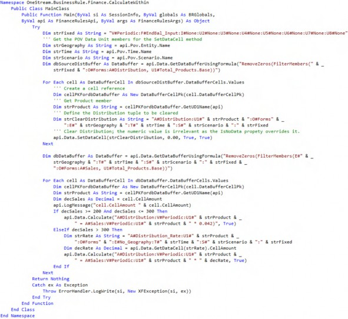
Core Planning I – Data and Calculations › Learn to Code › Data Buffers › Defining the Data Buffer
Calculate With Eval
The Calculate With Eval approach uses api.Data.Calculate to instantiate data buffer processing. The key advantage to this approach is that, unlike Calculate Within, the data buffer is considered just once, thus improving performance.
The Calculate With Eval Method has eight parts:
Declare the fixed Dimension constants.
Perform an
api.Data.CalculateMethod using the Eval’sAddressOfMethod to call the privateOnEvalDataBuffersubroutine to perform buffer math.Eval(A#Sales..)is used to kick off the buffer math – traditional right of the equals sign logic does not occur.Within
OnEvalDataBuffer:The EvalDataBufferEventArgs eventArgs object’s cells are cleared.
eventArgs’s DataBuffer1 is looped.Declare and assign the fixed and POV Dimension Members.
Evaluate
A#Sales’ data, and perform a rate calculation to value
A#Distribution.
e. Write the results of the data buffer evaluation to disk.
Core Planning I – Data and Calculations › Learn to Code › Data Buffers › Defining the Data Buffer › Calculate With Eval
Defining Fixed Dimensions
Dimensions that are not used, or whose Member names are fixed, are assigned to a string variable, in this case, strFixed.
Dim strFixed As String = "O#Forms:V#Periodic:F#EndBal_Input:I#None:U2#None:U3#None:U4#None:U5#N one:U6#None:U7#None:U8#None"
Core Planning I – Data and Calculations › Learn to Code › Data Buffers › Defining the Data Buffer › Calculate With Eval
Evaluating Sales
While the left hand side of api.Data.Calculate is used to ultimately assign the results of the Eval Method, the actual looping and logic tests within the data buffer occurs within the OnEvalDataBuffer subroutine.
api.Data.Calculate("A#Distribution:" & strFixed & " = Eval(A#Sales:" & strFixed & ")", AddressOf OnEvalDataBuffer)
By passing just the Member A#Sales into Eval, Sales’ data buffer is then passed to the OnEvalDataBuffer subroutine. There is no need to use api.Data.GetDataBufferUsingFormula to create a data buffer as there was in the Calculate Within Method.
The name OnEvalDataBuffer is a convention, not a required name; use whatever subroutine name makes most sense.
Core Planning I – Data and Calculations › Learn to Code › Data Buffers › Defining the Data Buffer › Calculate With Eval
Clearing eventArgs
Eval’s AddressOf operator performs a by value pass of EvalDataBufferEventArgs which contains Sales’ data buffer as can be seen in the Private Sub declaration.
Once in the subroutine, before any processing occurs in DataBufferResult, clear any potential cells.
Private Sub OnEvalDataBuffer(ByVal api As FinanceRulesApi, ByVal evalName As String, ByVal eventArgs As EvalDataBufferEventArgs)
Try
eventargs.DataBufferResult.DataBufferCells.Clear()
.
.
.
Catch ex As Exception
Throw errorhandler.logwrite(api.SI, New XFException(api.SI,ex)) End Try
End SubCore Planning I – Data and Calculations › Learn to Code › Data Buffers › Defining the Data Buffer › Calculate With Eval
Looping DataBuffer1
EvalDataBufferEventArgs supports up to three data buffers. This use case requires just
DataBuffer1.
RemoveNoData and RemoveZeros are not valid once within the data buffer, so the test for a cell’s isNoData status and a <> 0 amount perform the same function of removing data that does not need to be considered.
For Each cellSource As DataBufferCell In eventArgs.DataBuffer1.DataBufferCells.Values
If (Not cellSource.CellStatus.IsNoData) And (cellSource.CellAmount
<> 0.0) Then
.
.
.
End If NextCore Planning I – Data and Calculations › Learn to Code › Data Buffers › Defining the Data Buffer › Calculate With Eval
Fixed and POV Members and a Result Cell
Fixed and POV-driven Members must be queried for use in the Buffer Math.
cellSource is instantiated in the For Each…Next DataBuffer1 loop and is the source Sales value. cellResult will be Sales’ target cell.
Dim cellResult As New DataBufferCell(cellSource) Dim strFixed As String =
"V#Periodic:F#EndBal_Input:I#None:U2#None:U3#None:U4#None:U5#None:U6#N one:U7#None:U8#None"
Dim strTime As String = api.Pov.Time.Name
Dim strScenario As String = api.Pov.Scenario.Name
Dim strProduct As String = cellSource.DataBufferCellPk.GetUD1Name(api)Core Planning I – Data and Calculations › Learn to Code › Data Buffers › Defining the Data Buffer › Calculate With Eval
Testing and Calculating
The same logic branching based on Sales’ value occurs as it did in Calculate Within but with data buffer math instead of api.Data.Calculate Methods within a data buffer.
The clear of Distribution occurs in the last Else condition by setting the cellResult object’s cell isNoData and isInvalid properties to True and False.
If (cellSource.CellAmount >= 200 And cellSource.CellAmount <= 300)
Then
cellResult.CellAmount = cellSource.CellAmount * .042 ElseIf cellSource.CellAmount > 300
Dim strRate As String = "A#Distribution_Rate:U1#" & strProduct & ":O#Forms:E#No_Geography:T#" & strTime & ":S#" & strScenario & ":" & strFixed
Dim decRate As Decimal = api.Data.GetDataCell(strRate).CellAmount cellResult.CellAmount = cellSource.CellAmount * decRate
Else
Dim objCellStatus As DataCellStatus = DataCellStatus.CreateDataCellStatus(True, False)
objCellStatus.IsCalcStatus = True cellResult.CellStatus = objCellStatus
End IfCore Planning I – Data and Calculations › Learn to Code › Data Buffers › Defining the Data Buffer › Calculate With Eval
Writing the Results
With each pass through the loop, the eventargs.DataBufferResult.SetCell Method receives the calculated result and then passes it back to the originating api.Data.Calculate Method once all the cells are evaluated.
eventargs.DataBufferResult.SetCell(api.SI, cellResult, False)
Core Planning I – Data and Calculations › Learn to Code › Data Buffers › Defining the Data Buffer › Calculate With Eval
CalculateWithEval
Below is the code in full.
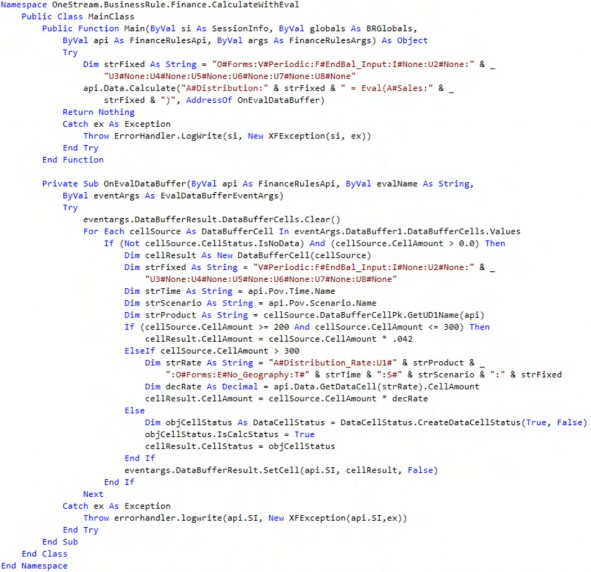
Core Planning I – Data and Calculations › Learn to Code › Data Buffers › Defining the Data Buffer
Buffer Calculations
The calculation requirements are the same but are approached from a data buffer math methodology. api.Data.Calculate is not used in any form.
There are eight sections in the BufferCalculations Business Rule:
Declare and assign the fixed and POV Dimension Members as well as a data buffer Destination Info variable.
Create a
A#Distributiondata buffer.Loop and clear the
A#Distributiondata buffer.Commit the cleared
A#Distributiondata buffer to disk.Create a
A#Salesdata buffer.Get the
A#DistributionMember’sMemberIdto use in assigning the target data buffer cell.Loop the
A#Salesdata buffer, evaluateA#Sales’ data, and perform a rate calculation to valueA#Distribution.Commit the calculated
A#Distributiondata buffer to disk.
Core Planning I – Data and Calculations › Learn to Code › Data Buffers › Defining the Data Buffer › Buffer Calculations
Fixed and POV Members and Destination Info
Dimensions that are not used, or whose Member names are fixed, are assigned to a string variable, in this case, strFixed.
The Data Management Custom Calculate Step provides Data Unit POV values.
Dim strFixed As String = "V#Periodic:F#EndBal_Input:I#None:U2#None:U3#None:U4#None:U5#None:U6#N one:U7#None:U8#None"
Dim strGeography As String = api.Pov.Entity.Name Dim strTime As String = api.Pov.Time.Name
Dim strScenario As String = api.Pov.Scenario.Name api.Data.SetDataBuffer Methods require an ExpressionDestinationInfo object to define target Dimension intersections. In the case of this use case, this is not necessary.
Dim diDestination As ExpressionDestinationInfo = api.Data.GetExpressionDestinationInfo("")Core Planning I – Data and Calculations › Learn to Code › Data Buffers › Defining the Data Buffer › Buffer Calculations
Defining the Distribution Data Buffer
There are multiple data buffer definition Methods. This chapter uses:
api.Data.GetDataBufferUsingFormula.
Dim dbSourceDistBuffer As DataBuffer = api.Data.GetDataBufferUsingFormula("RemoveZeros(FilterMembers(" & strFixed & ", O#Forms, A#Distribution, U1#Total_Products.Base))", DataApiScriptMethodType.Calculate, False)Note that the Buffer Calculations approach requires the optional scriptMethodType and changeIdsToCommonIfNotUsingAll properties to be valued.
Core Planning I – Data and Calculations › Learn to Code › Data Buffers › Defining the Data Buffer › Buffer Calculations
Looping and Clearing A#Distribution
The dbBufferToClear data buffer object is created, and then the source dbSourceDistBuffer is looped.
Within the loop, the cell amount is set to zero and then defined as NoData. The numeric value is meaningless because the CreateDataCellStatus Method will remove it; zero is used as a convention.
As the cells are set to NoData, the target data buffer receives the cell’s address and its NoData status.
Dim dbBufferToClear As New DataBuffer() For Each cellSource As DataBufferCell In dbSourceDistBuffer.DataBufferCells.Values
Dim cellResult As New DataBufferCell(cellSource) cellResult.CellAmount = 0
Dim objCellStatus As DataCellStatus = DataCellStatus.CreateDataCellStatus(True, False)
objCellStatus.IsCalcStatus = True cellResult.CellStatus = objCellStatus dbBufferToClear.SetCell(si, cellResult)
NextCore Planning I – Data and Calculations › Learn to Code › Data Buffers › Defining the Data Buffer › Buffer Calculations
Commit The Cleared A#Distribution Data Buffer
A single line commits the in-memory data buffer dbBufferToClear to disk.
api.Data.SetDataBuffer(dbBufferToClear, diDestination)
All A#Distribution data in the overall Data Unit has now been cleared.
Core Planning I – Data and Calculations › Learn to Code › Data Buffers › Defining the Data Buffer › Buffer Calculations
Defining the Sales and Result Data Buffers
Defining a data buffer to address A#Sales mirrors A#Distribution’s.
Dim dbSourceBuffer As DataBuffer = api.Data.GetDataBufferUsingFormula("RemoveZeros(FilterMembers(" & strFixed & ":O#Forms:A#Sales,,, U1#Total_Products.Base))", DataApiScriptMethodType.Calculate, False)
Dim dbResultBuffer As New DataBuffer()Core Planning I – Data and Calculations › Learn to Code › Data Buffers › Defining the Data Buffer › Buffer Calculations
A#Distribution’s Member ID
A#Sales data buffer cells do not address A#Distribution. To convert A#Sales to A#Distribution, the latter’s internal MemberId must be queried, stored as an Integer variable, and then used to assign the A#Sales’ cell value to A#Distribution.
Dim intDistribution As Integer = api.Members.GetMemberId(DimTypeId.Account, "Distribution")Core Planning I – Data and Calculations › Learn to Code › Data Buffers › Defining the Data Buffer › Buffer Calculations
Looping, Testing, and Calculating
A For Each…Next loop of the data buffer cell value provides the pointers to the cells and their data and metadata.
As the loop traverses dbSourceBuffer’s Sales data cells, a new target cell is instantiated and the cell’s A#Sales value is evaluated:
If it is between 200 and 300, the source cell Sales amount is assigned to the target cell and then multiplied by the constant 0.042.
A#Distribution’s previously queriedMemberIdis assigned to that target cell for addition to the target data bufferdbResultBuffer.If it is greater than 300, after the assignment of the source cell to the target, the source cell’s
UD1Product Dimension Member is queried and then used withapi.Data.GetDataCellto retrieveA#Distribution_Rate’s data value. As with the first branch, the rate calculation is assigned toA#Distributionvia itsMemberId.
At the end of the loop, the target cell is added to the dbResultBuffer.
For Each cellSource As DataBufferCell In dbSourceBuffer.DataBufferCells.Values
Dim cellResult As New DataBufferCell()
If cellSource.CellAmount >= 200 And cellSource.CellAmount <= 300 Then cellResult = cellSource cellResult.CellAmount = cellSource.CellAmount * 0.042 cellResult.DataBufferCellPk.AccountId = intDistribution
ElseIf cellSource.CellAmount > 300 Then cellResult = cellSource
Dim strProduct = cellSource.DataBufferCellPk.GetUD1Name(api) Dim decDistRate As Decimal = api.Data.GetDataCell("E#No_Geography:A#Distribution_Rate:C#Local:O#For ms:" & strFixed & ":U1#" & strProduct & ":S#" & strScenario & ":T#" & strTime).CellAmount cellResult.CellAmount = cellSource.CellAmount * decDistRate cellResult.DataBufferCellPk.AccountId = intDistribution
End If
dbResultBuffer.SetCell(si, cellResult) NextCore Planning I – Data and Calculations › Learn to Code › Data Buffers › Defining the Data Buffer › Buffer Calculations
Commit to Disk
The target data buffer is in memory and must now be written to the year’s fact table. This is done outside of the loop of the source buffer for better performance.
api.Data.SetDataBuffer(dbResultBuffer, diDestination)
Core Planning I – Data and Calculations › Learn to Code › Data Buffers › Defining the Data Buffer › Buffer Calculations
BufferCalculations
Below is the code in full.
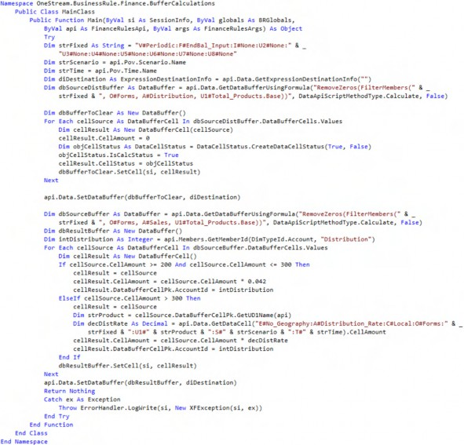
Core Planning I – Data and Calculations › Learn to Code › Data Buffers › Defining the Data Buffer
Data Before and After Calculation
All three Methods have identical functional requirements and broadly similar code patterns which are: clear A#Distribution, loop A#Sales’ data buffer to test A#Sales, and then either multiply it by a constant or a U1#productname:E#No_Geograpy rate depending on A#Sales’ value.
Calculate Within loops data buffers as Buffer Calculations and writes data on a cell-by-cell value either to clear or calculate Distribution. It reads and writes the Data Unit’s entire data buffer many times.
Calculate With Eval uses one data buffer to test, calculate, and clear Distribution in an Eval subroutine. It performs one pass through the Data Unit’s data buffer.
Buffer Calculations, as the name implies, performs its clear and calculations in two data buffers. Regardless of how the logic is performed, the result is the same.
Core Planning I – Data and Calculations › Learn to Code › Data Buffers › Defining the Data Buffer › Data Before and After Calculation
Before
The three conditions of Sales between 200 and 300, greater than 300, and less than 200 (or nothing at all) are evaluated and calculated.
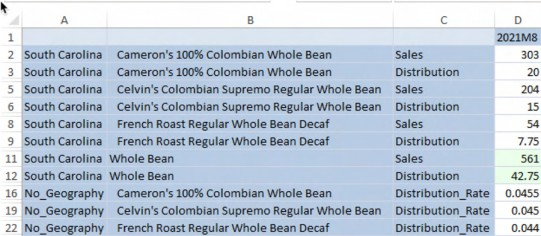
Figure 2.24
Core Planning I – Data and Calculations › Learn to Code › Data Buffers › Defining the Data Buffer › Data Before and After Calculation
After
Data buffers have been looped, Sales’ value has been tested, and appropriate logic and calculations were applied to Distribution. The calculated results match the stated requirements.
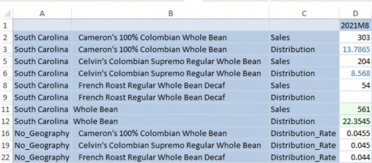
Figure 2.25
Core Planning I – Data and Calculations › Learn to Code
Breaking the Data Unit with MemberScriptAndValue
Common knowledge holds that calculations cannot take place outside the current Data Unit. This belief is wrong.
Core Planning I – Data and Calculations › Learn to Code › Breaking the Data Unit with MemberScriptAndValue
Calculations Bound by the Data Unit
Finance Business Rules commonly retrieve data from other Data Units for use in calculations, e.g., a calculation in Cb#Sample:E#South_Carolina:T#2018M1:S#Plan:C#Local can retrieve data from E#Pennsylvania, but cannot write to E#Pennsylvania. OneStream will throw an Invalid destination data unit in script message when this is attempted through an api.Data.Calculate or an api.Data.SetDataCell.
Core Planning I – Data and Calculations › Learn to Code › Breaking the Data Unit with MemberScriptAndValue
MemberScriptAndValue Calculations Outside the Data Unit
However, the need to write outside a Data Unit exists. This is accomplished through the MemberScriptAndValue object, the List(Of MemberScriptAndValue) collection, and the BRApi.Finance.Data.SetDataCellsUsingMemberScript Method.
Using a Member Script string, the MemberScriptAndValue is assigned a tuple and data value, the MemberScriptAndValue is added to the List(Of MemberScriptAndValue) list collection (collections can have many Key Value Pairs or just one), and the BRApi.Finance.Data.SetDataCellsUsingMemberScript Method writes the list collection to the database.
This technique ignores Data Unit boundaries; values can be written to any Data Unit in the Cube or even outside the Cube.
The MemberScriptAndValue approach cannot write to O#Import; it is O#Forms only. As discussed in the Level 2 Data Unit section, this is a net positive as O#Import data can be overwritten given the right data circumstances.
| Note: Although the primary use case for this technique is for writing outside the Data Unit, it can be used within as well. |
Core Planning I – Data and Calculations › Learn to Code › Breaking the Data Unit with MemberScriptAndValue › MemberScriptAndValue Calculations Outside the Data Unit
Outside the Data Unit Use Case
The use case for this Business Rule is running within the Entity South Carolina’s Data Unit and writing outside to the Entity Pennsylvania.
There are four components to the BreakTheDataUnit Finance Business Rule:
Declaring the
MemberScriptAndValueobject,List(Of MemberScriptAndValue)collection, and Member Script tuple string.Assignment of a numeric value,
isNoDataasFalse, and the Member Script tuple properties to theMemberScriptAndValueobject.Add the
MemberScriptAndValueobject to theList(Of MemberScriptAndValue)
collection.
4. A commit of the collection to the Cube via the BRApi.Finance.Data.SetDataCellsUsingMemberScript Method within an XFResult object with an error check.
Core Planning I – Data and Calculations › Learn to Code › Breaking the Data Unit with MemberScriptAndValue › MemberScriptAndValue Calculations Outside the Data Unit › Outside the Data Unit Use Case
Declarations
Three variables must be defined: the MemberScriptAndValue object, a collection of those objects (this example uses just one – collections can be n objects long), and a tuple definition. No values have been assigned to these variables.
Dim objMemberScriptValue As New MemberScriptAndValue
Dim objMemberScriptValues As New List(Of MemberScriptAndValue) Dim strMemberScript As StringCore Planning I – Data and Calculations › Learn to Code › Breaking the Data Unit with MemberScriptAndValue › MemberScriptAndValue Calculations Outside the Data Unit › Outside the Data Unit Use Case
MemberScriptAndValue Assignments
With the variables declared, the tuple’s Member intersection, data value, and a isNoData status as False (which means that it is Real data) must be assigned. To aid code comprehension, the fixed Dimension’s Members are assigned to a string variable and then appended to the tuple string.
Dim strFixed As String = "V#Periodic:F#EndBal_Input:I#None:U2#None:U3#None:U4#None:U5#None:U6#N one:U7#None:U8#None"
strMemberScript = "Cb#Sample:A#Sales:E#Pennsylvania:O#Forms:U1#10_010:S#Plan:T#2021M1:I#
None:" & strFixed objMemberScriptValue.Amount = 303 objMemberScriptValue.IsNoData = False objMemberScriptValue.Script= strMemberScriptCore Planning I – Data and Calculations › Learn to Code › Breaking the Data Unit with MemberScriptAndValue › MemberScriptAndValue Calculations Outside the Data Unit › Outside the Data Unit Use Case
MemberScriptAndValue Collection Assignment
The MemberScriptAndValue object is now ready for assignment to the objMemberScriptValues collection.
objMemberScriptValues.Add(objMemberScriptValue)
Core Planning I – Data and Calculations › Learn to Code › Breaking the Data Unit with MemberScriptAndValue › MemberScriptAndValue Calculations Outside the Data Unit › Outside the Data Unit Use Case
Write to Cube with SetDataCellsUsingMemberScript
The collection has been valued and is now ready to write to disk via
SetDataCellsUsingMemberScript within an XFResult object.
Note: The XFResult object’s BoolValue = True property must be tested to trap errors; this Method will not log errors otherwise. |
If objMemberScriptValues.Count > 0 Then Dim objXFResult As XFResult =
BRApi.Finance.Data.SetDataCellsUsingMemberScript(si, objMemberScriptValues)
If Not objXFResult.BoolValue Then
Throw ErrorHandler.LogWrite(si, New XFException(si, objXFResult.Message, String.Empty))
End If End IfCore Planning I – Data and Calculations › Learn to Code › Breaking the Data Unit with MemberScriptAndValue › MemberScriptAndValue Calculations Outside the Data Unit
Data Management Step
Note that the Data Unit definition is for South_Carolina, not Pennsylvania.
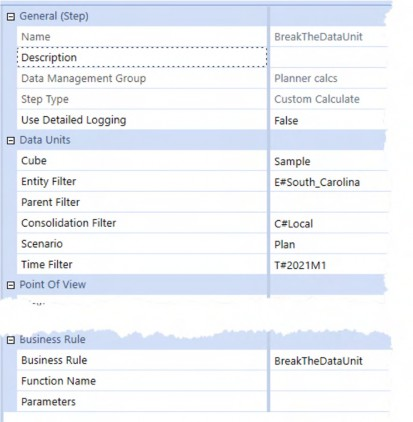
Figure 2.26
Executing the Step results in values of 42 in the inside-the-Data-Unit E#South_Carolina and 303 in the outside-the-Data-Unit E#Pennsylvania.
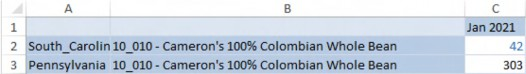
Figure 2.27
Note C2’s and C3’s different text colors.
Core Planning I – Data and Calculations › Learn to Code › Breaking the Data Unit with MemberScriptAndValue › MemberScriptAndValue Calculations Outside the Data Unit
DurableCalculation versus Input
When examining a data value in a Quick View or Cube View, MemberScriptAndValue does not (as far as OneStream’s Data Type tracking is concerned) calculate data. Instead, the technique results in Input data.
There is no functional difference between the two storage Types, but instead evidence of how different MemberScriptAndValue is from traditional calculations.
Core Planning I – Data and Calculations › Learn to Code › Breaking the Data Unit with MemberScriptAndValue › MemberScriptAndValue Calculations Outside the Data Unit › DurableCalculation versus Input
42 Inside the Data Unit
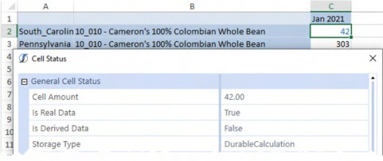
Figure 2.28
Core Planning I – Data and Calculations › Learn to Code › Breaking the Data Unit with MemberScriptAndValue › MemberScriptAndValue Calculations Outside the Data Unit › DurableCalculation versus Input
303 Outside the Data Unit
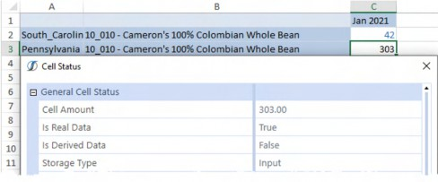
Figure 2.29
Core Planning I – Data and Calculations › Learn to Code › Breaking the Data Unit with MemberScriptAndValue › MemberScriptAndValue Calculations Outside the Data Unit
Pros and Cons around MemberScriptAndValue
The ability to write outside the Data Unit is useful because it allows a source location to define calculated data targets within the Cube.
Its non-calculated status means that api.Data.ClearCalculatedData cannot be used to clear it.
That caution aside, MemberScriptAndValue is a powerful and flexible tool for writing to places where code should not – and in theory cannot – go. It can with MemberScriptAndValue.
Core Planning I – Data and Calculations › Learn to Code
You’ve Either Got or You Haven’t Got Style
Core Planning I – Data and Calculations › Learn to Code › You’ve Either Got or You Haven’t Got Style
Comments and Why We Should Must Use Them
Your authors have produced elegant, highly performant, and sometimes almost witty code – or so they like to think – across the decades. They have written in languages obscure (APL) and common (VBA), obsolete (JCL) and as modern as today (Groovy). Every one of their roles – hobbyist, student, employee, consultant – has revolved around code and its application. It is intrinsic to what they do, the bedrock of their professional reputation, and not incidentally how they earn their daily crust.
And, yet, they cannot remember how or why they wrote a given bit of code if it was written over a week ago and sometimes even less than that. Why?
A OneStream practitioner must play many roles: designer, documenter, tester, trainer, evangelist, and developer. Where one starts and the other ends can be difficult. The pace is frenetic and does not decrease with time.
We are busy, too busy. You are too. We forget many details, as do you, because of our job’s other pressures and demands. When we forget, we suffer errors in the form of rework, unpleasant error messages, and worst of all – data errors.
And, yet, all of this can be avoided if we adhere to the discipline of consistently writing concise and meaningful code comments. Good comments – sometimes just any kind of comments – can make the difference between OMG-what-did-I-do, and yeah-it’s-awesome-the-way-it-works.
You must – we all must – write comments in a form such that we, and those who inherit our code, can understand, maintain, and extend our hard work.
| Note: This discussion around comments does not include the larger subject of formal documentation, although your authors have noted that when they fail to write good comments, the formal documentation process is even more excruciating than usual. |
Core Planning I – Data and Calculations › Learn to Code › You’ve Either Got or You Haven’t Got Style › Comments and Why We Should Must Use Them
The Philosophy of Commenting
Coders seem to either dismiss or embrace the practice of comments. Here are two true, personally-witnessed-by-Cameron stories. In both cases, I was in the very beginning of my career and so even more wide-eyed in wonder than I usually am.
Core Planning I – Data and Calculations › Learn to Code › You’ve Either Got or You Haven’t Got Style › Comments and Why We Should Must Use Them › The Philosophy of Commenting
Why Bother?
In what was surely a wildly misplaced although much-appreciated opportunity, I was thrust into an expat opening in A Country That Makes Awfully Good Beer and swapped jobs with a programmer Over There; he took my job, and I took his. He was – and I presume still is – an incredibly gifted programmer and a good 10 years ahead of me in experience. There I was, all of 23, a stranger in a strange land, and I was handed a not-inconsiderable list of systems he owned and that I was slated to maintain. The language (spoken and written, although I was familiar with the programming language) was different, the systems were completely different, even the AZERTY keyboards were different. I was all at sea and desperate for some direction. Like the naïve fool that I was (and still am), I asked if there was commented source code so I could try to make sense out of what appeared to me to be chaos.
The response? “Good programmers can read code.” Ouch.
For the record, figuring out his admittedly brilliant work was torture. Whatever I wrote in the course of maintenance was profusely commented. I probably kept the comments’ sarcasm level down to barely-acceptable-by-corporate-standards, but likely only just. That was a Not Fun Experience.
Core Planning I – Data and Calculations › Learn to Code › You’ve Either Got or You Haven’t Got Style › Comments and Why We Should Must Use Them › The Philosophy of Commenting
Because You Must
Years later, older and only somewhat wiser, I was having a philosophical discussion around comments (yes, I really did and still do, cf. this section) with a usually calmer fellow consultant who – when challenged on the importance and style of commenting – excitedly told me, “For the love of all that is good, don’t waste time commenting how you wrote something because I can read code. Tell me why you wrote it. Tell me the why, and the rest is easy.”
Those are real words of wisdom, ones that even the densest of programmers like Yr Obt. Svt can appreciate. Why are they wise? They are wise because the act of writing comments as code is developed like creating a map in a deep and wooded forest for yourself and for everyone else who touches your work. Comments keep us all from getting lost. Getting lost is by turns frustrating and even frightening. Write comments.
Core Planning I – Data and Calculations › Learn to Code › You’ve Either Got or You Haven’t Got Style › Comments and Why We Should Must Use Them
Competent Comments
There are two main components to comments: a header block and inline explanations.
Core Planning I – Data and Calculations › Learn to Code › You’ve Either Got or You Haven’t Got Style › Comments and Why We Should Must Use Them › Competent Comments
Header
Header comments are at the beginning of each code function or subroutine.
Identify the code name.
Describe the purpose of the code section.
Document who wrote the code originally (and when) as well as any modifications. Modified dates must include what was changed and who changed it.
Note any special considerations.
Indicate what modules or objects call the code in question.
Core Planning I – Data and Calculations › Learn to Code › You’ve Either Got or You Haven’t Got Style › Comments and Why We Should Must Use Them › Competent Comments
Inline
There must be some ratio of comment-to-code where the value of concise comments decreases… but your authors have yet to experience that.
Inline comments can be as short as a few words or as long as several sentences. Length is not important; conveying why a given block of code does what it does is.
Core Planning I – Data and Calculations › Learn to Code › You’ve Either Got or You Haven’t Got Style › Comments and Why We Should Must Use Them
An Example
Core Planning I – Data and Calculations › Learn to Code › You’ve Either Got or You Haven’t Got Style › Comments and Why We Should Must Use Them › An Example
Header
Reading a Business Rule header comment block should tell the reader the above required header components and impart the code’s raison d'être.
All five of the header code components are present: name, purpose, modified, author, special considerations, and calling processes.
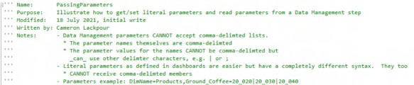
Core Planning I – Data and Calculations › Learn to Code › You’ve Either Got or You Haven’t Got Style › Comments and Why We Should Must Use Them › An Example
Inline
Every block of code within the Business Rule is called out and explained.
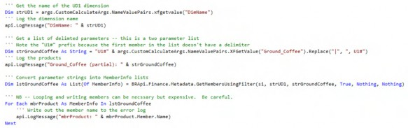
Core Planning I – Data and Calculations › Learn to Code › You’ve Either Got or You Haven’t Got Style › Comments and Why We Should Must Use Them › An Example
Easy Peasy
There are more than twice as many comments as actual code lines in the function. The effort behind that level of commenting was low (and certainly lower than the code itself). The end result is that the what and the how of the code is easily understandable because the why is fully explained.
Always perform this easy practice and your code will shine. Fail to do so and expose your hard work to error.
Core Planning I – Data and Calculations › Learn to Code › You’ve Either Got or You Haven’t Got Style
Comments In This Chapter
You will note that comments are not generally used in code to maximize code clarity. The textual descriptions around code blocks serve the same purpose as comments. Review of the sample application – as available on OneStream Press’s site – contains fully-commented code.
Core Planning I – Data and Calculations › Learn to Code › You’ve Either Got or You Haven’t Got Style
Variable Naming
In VB.Net, variables can be named any combination of alphanumeric characters. Special characters such as ! or @ are not valid and will fail on syntax check.
Variable names should be meaningful. Dim X As Variabletype is obvious when inline with an assignment, e.g., Dim X As Decimal = 42.75 and is incomprehensible when viewed 120 or even 12 code lines later.
When naming variables, use the Hungarian notation mnemonic identifier naming convention to help identify the variable Type and purpose. Use lower CamelCase to delineate the variable Type, e.g., Dim strSales As String and Dim decSales As Decimal. That a string value of some kind should be assigned to strSales and a numeric value should be assigned to decSales is easy to understand when first read and later through the code.
Variable names can be as long as 255 characters. A variable name that is 255 characters is considered bad form if for no other reason that it makes code line length either unnecessarily break to the next line or scroll off the screen to the right. Make the variable name long enough to be understandable and no more.
Be consistent in your naming convention for your sake and for others who may take ownership of your code.
For more information on programming style, see: https://docs.microsoft.com/en-us/dotnet/visual-basic/programming-guide/program-structure/naming-conventions
Core Planning I – Data and Calculations › Learn to Code › You’ve Either Got or You Haven’t Got Style
Doing It With Class
Common data, metadata, security, and other core operations are used repeatedly within an application, e.g., getting the ancestors of a Base level Member or its siblings returned as a list of Members. Practitioners can (and do) write these on an as-needed basis or create their own code snippets that are copy-pasted into rules or applications.
This ad hoc and informal Method of sharing code would be easier if a central repository of these functions could be created and then be made addressable within other Business Rules. If those functions’ complexity could be abstracted so that the Methods could be more easily used, so much the better. Ideally, this collection of functionalities would be importable into an application as a standard OneStream Business Rule.
All of this can be done with a custom OneStream class, an object that defines properties, Methods, and events.
Every (or practically so) operation in a Business Rule calls a class, e.g., api.Data.Calculate calls the DataApi class’ Calculate Method and passes properties such as a formula and a Boolean for isDurableCalculatedData. Navigating through the OneStream API documentation shows this directly.
Core Planning I – Data and Calculations › Learn to Code › You’ve Either Got or You Haven’t Got Style › Doing It With Class
Via the API Documentation
The DataApi class is referenced in Business Rules through the Imports OneStream.Finance.Engine statement at the top of every Business Rule.
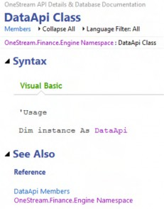
Figure 2.30
Clicking on DataApi Members links to DataApi Class Members, which (amongst many other public Methods) contains Calculate:
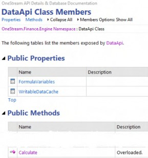
Figure 2.31
The overloaded Calculate Method supports three different parameter sets:
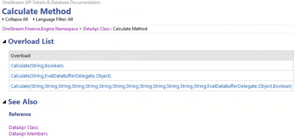
Figure 2.32
The first of which is the overloaded parameter String,Boolean:
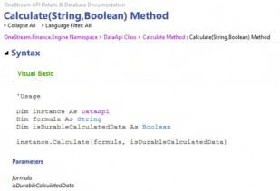
Figure 2.33
As noted, every Method in a Business Rule comes from a class of some kind because OneStream is a modern object-oriented, class-based development language.
Core Planning I – Data and Calculations › Learn to Code › You’ve Either Got or You Haven’t Got Style › Doing It With Class
The Importance of Classes
Why does this matter? It matters because Business Rules themselves are functions (Methods) that run within the Business Rule’s class. This can be deduced by examining the start and end of every Business Rule in OneStream, no matter the type.
Business Rules start with a Function declaration within an overall MainClass and when complete return Nothing, thus acting akin to a subroutine.
Core Planning I – Data and Calculations › Learn to Code › You’ve Either Got or You Haven’t Got Style › Doing It With Class
Header
Here it is:
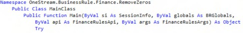
Core Planning I – Data and Calculations › Learn to Code › You’ve Either Got or You Haven’t Got Style › Doing It With Class
Custom Classes
If classes are objects that have properties and Methods that can be instantiated and used within a Business Rule, and Business Rules themselves are classes, then writing custom classes is a matter of creating a Business Rule with functions (Methods), referring to it in a separate Business Rule, and executing the Methods.
Core Planning I – Data and Calculations › Learn to Code › You’ve Either Got or You Haven’t Got Style › Doing It With Class › Custom Classes
Classless
Here is some code to return a comma-delimited list of Base-level Members of Parent:
Dim strDimensionName As String = "Products" Dim strMemberName As String = "Total_Products"
Dim objDimPk As DimPk = BRApi.Finance.Dim.GetDimPk(si,strDimensionName)
''' Get the member id from supplied dimension name
Dim mbrID As Integer = BRApi.Finance.Members.GetMemberId(si, objDimPk.DimTypeId, strMemberName)
Dim allBaseMembers As List(Of Member) = BRApi.Finance.Members.GetBaseMembers(si, objDimPk, mbrID, Nothing)
Dim strAllBaseMembers As New List(Of String)
For Each baseMember As Member In allBaseMembers strAllBaseMembers.Add(baseMember.Name)
NextWhich produces this:
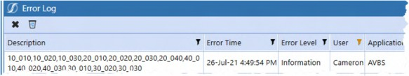
Figure 2.34
Core Planning I – Data and Calculations › Learn to Code › You’ve Either Got or You Haven’t Got Style › Doing It With Class › Custom Classes
Code as a Class
Creating the above code as a function within a custom class removes the explicit Dimension and Member name assignment – the rest of the code is the same with the addition of a Namespace, Class name, and public GetRelative0Members Function:
Namespace OneStream.BusinessRule.Finance.MemberFunctions Public Class MainClass
Public Function GetRelative0Members(ByVal si As SessionInfo, ByVal mbrName As String, ByVal dimName As String) As List (Of String)
Try
''' Get the dimpk from supplied dimension name Dim objDimPk As DimPk =
BRApi.Finance.Dim.GetDimPk(si,dimName)
''' Get the member id from supplied dimension name Dim mbrID As Integer =
BRApi.Finance.Members.GetMemberId(si, objDimPk.DimTypeId, mbrName)
''' Get all base members of a given member Dim allBaseMembers As List(Of Member) =
BRApi.Finance.Members.GetBaseMembers(si, objDimPk, mbrID, Nothing)
''' Add base members to a string list
Dim strAllBaseMembers As New List(Of String)
''' Loop the base members and add them to a string as a comma-delimted list
For Each baseMember As Member In allBaseMembers strAllBaseMembers.Add(baseMember.Name)
Next
''' Return the list Return strAllBaseMembers
Catch ex As Exception
Throw ErrorHandler.LogWrite(si, New XFException(si, ex)) End Try
End Function
End Class End NamespaceCore Planning I – Data and Calculations › Learn to Code › You’ve Either Got or You Haven’t Got Style › Doing It With Class › Custom Classes
Referring to a Business Rule
The TestClassInExtender Extender (This could easily be of Type Finance) Business Rule is calling the Finance MemberFunctions Business Rule.
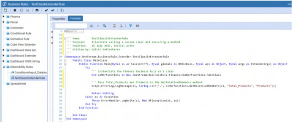
Figure 2.35
Referenced Assemblies
To make the external Business Rule available to the calling Rule, select that Rule’s Properties tab and set the Referenced Assemblies property to BR\rulename.
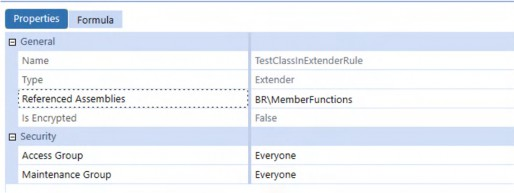
Figure 2.36
Instantiating and Executing GetRelative0Members
In the calling Rule, instantiate the external Business Rule and its core class:
Dim osMbrFunctions As New OneStream.BusinessRule.Finance.MemberFunctions.MainClass
Writing the level zero descendants of U1#Total_Products to the log is now one line of code in the calling Business Rule:
brapi.ErrorLog.LogMessage(si, String.Join(",", osMbrFunctions.GetRelative0Members(si, "Total_Products", "Products")))
The output is the same:
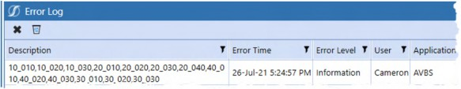
Figure 2.37
Consistent and Portable
A class that contains multiple functions is valuable because it can be written once, used many times, always works the same way, and is easily moved across applications.
| Note: Consulting companies that create code libraries could (and should if they have not already done so) compile similar functions into classes and then use them in all of their implementations. Customers and clients should create their own custom classes and use them as well, for the same reasons. The effort is low; the reward is high. Use custom classes wherever you can. |
Core Planning I – Data and Calculations
The End of Core I
This chapter has covered important good practices in subjects both common and unusual. Even the commonplace (data buffers, code style) topics have nuances; the uncommon are the product of your authors encountering unexplained behavior (Level 2 Data Units) or realizing an opportunity to explore how OneStream really works (data storage).
The next chapter, Core II – Commanding and Controlling OneStream Planning, is the companion to the Cube-oriented subject matter in this chapter. The marriage of Slice Security and Conditional Input, SQL as a Cube data source and driver of Finance Business Rules, dynamic Excel retrieves via XFBR Business Rules, Extended Dimensionality, the role of Stage reporting in a Cube-centric system, and a new way of thinking about Planning Scenarios are all covered in detail.
These subjects can be consumed in isolation but are best studied holistically in conjunction with this chapter. Understanding the Core(s) of OneStream is vital to our understanding of how to use OneStream to its fullest potential.